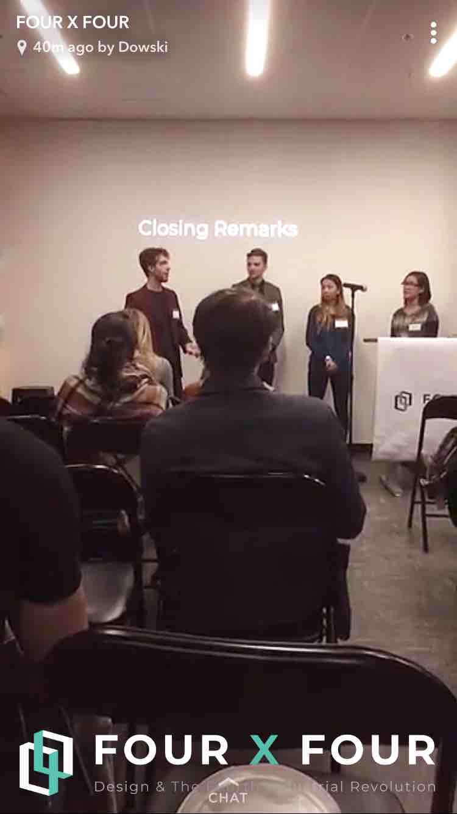

Design as Gatekeepers to Mass Adoption of Blockchain
Design as Gatekeepers to Mass Adoption of Blockchain
December 22, 2017
Dissertation written for Industrial Design Seminar course; Presented during Four X Four: Design & the Fourth Industrial Revolution

The PDF format of the dissertation can be found here:
ABSTRACT
Blockchain is popularly known as the technology behind cryptocurrencies such as Bitcoin. It is a system for transactions of data over a network of non-trusted peers, with decentralized control. In conjunction with IoT devices, blockchain will eventually disrupt numerous industries. However, adoption is slow due to a lack of understanding of this new technology: an understanding of it is required to derive its benefits and reason to adopt. This is why design acts as gatekeepers to the mass adoption of blockchains. It is up to designers to envision how this powerful technology can benefit the public, and how to communicate these benefits to allow mass adoption.
INTRODUCTION: BLOCKCHAINS IN CONJUNCTION WITH IOT DEVICES
Blockchain technology is popularly known as the technology behind cryptocurrencies such as Bitcoin (BTC) and Ether (ETH). This is made possible as blockchain facilitates secure transactions of data with no trusted third party. It utilizes cryptography to allow digital ledgers to record transactions across all computers across a distributed network (Marvin, 2017). These records are structured in a linearly dependent format, so that each subsequent record references the previous, creating a chain (Marvin, 2017). This structure prevents any alteration of the records, as alterations will require collusion of the entire network in altering all subsequent records on every computer across the network (Kovary, Zhou & Adoul, 2017). In the example of currency, this security allows the transaction of money to be done without the enforcement of a centralized body, such as the bank.
Simply put, blockchain is a system for transactions of data over a network of non-trusted peers, with decentralized control. It is currently restricted to transactions of digital data. However, when used in conjunction with Internet of Things sensors acting as data collection points, many aspects of the physical realm can also be recorded as digitized data (Zaninotto, 2016). Furthermore, blockchain’s decentralized property can offer a security solution much more scalable than the traditional one (Zaninotto, 2016). Much like blockchain promising security for cryptocurrencies, it can realize an innovation in security scheme for IoT devices (Zaninotto, 2016). With the continuous technological development in IoT devices, infinitely more applications for blockchain technology will be created. This will spur a virtuous cycle of technological growth and increasing applications for both blockchain and IoT devices.
BLOCKCHAIN AND SMART CONTRACTS
One disruptive application of blockchain used in conjunction with IoT devices would be smart contracts (Zaninotto, 2016). While traditionally any administrative task would require a trusted third party to store and process the data, smart contracts can automate this process and cut down on human capital cost and lead time. For example, if a contract were to be written for housing rentals, detailing an upfront payment, monthly rental fee, and deposit, any violation of this contract will require a trusted third party. Traditionally, this will involve settlement with lawyers and the court. However, if this contract were to be implemented through smart contracts, transactions can be set-up so payments can be transferred securely and automatically given the completion of each clause: an initial payment transferred upon set-up of the blockchain contract, a monthly payment on a set date each month for rent, and a one-time deposit transfer should the rented property be damaged. Proof of damage of rented property will be collected through Internet of Things capable sensors and actuators. The entire process is automated with no need for legal mediation. When previously, traditional contracts need to be legally enforced with intermediaries, block chain contracts are “technically enforced” and automated, involving no intermediaries (Zaninotto, 2016).
DESIGN AS GATEKEEPERS TO MASS ADOPTION FOR BLOCKCHAIN TECHNOLOGY
Blockchain will eventually disrupt numerous industries, with the financial industry being the first example with the rise of cryptocurrencies. However, adoption is slow due to a lack of understanding of this new technology (Wolf, 2016). In the example of BitCoin, though increasing in popularity, there still lacks a certain trust in this new fiat currency: those who don’t understand the technology is unable to appreciate its effectiveness and security (Wolf, 2016). One needs to be able to trust this technology to be able to entrust it with such sensitive information.
Much like most newly invented technology, there exists an initial barrier before mass adaptation due to the general public’s inability to understand the technology (Wolf, 2016). The technology is usually abstracted later for general use and adaptation, either purposely by the designer or incidentally by the mass public. For example, a critical technological turning point for mass adaptation of the internet, or World Wide Web, is the invention of HTTP (Wolf, 2016). Even now, most still don’t understand the concept of HTTP, or even what it is, but has abstracted it to simply the initial tagline of a web address. This over simplification still proves to be effective as it does not prevent the users’ end goal of successfully retrieving information through the internet. However, abstracting the concept of blockchains proves to be more complicated as an understanding of it is required to derive its benefits (Wolf, 2016). Benefits including decentralized control and currently unsurmountable security.
This presents an interesting design problem where designers are the gatekeepers to this emerging technology’s mass adoption. Most consumers are minimally concerned with the benefits of blockchain-based products and services (Wolf, 2016). Thus, few are likely to change their work habits and adopt to this innovation if they are unable to understand its advantages. Leading industries such as IBM have heavily invested in researching this design problem and are currently developing design guidelines for blockchain-based products (Mills, 2017). The eventual goal is to be able to present the right amount of information to general users to educate them on its advantages, and eventually allow mass adoption (Mills, 2017). Designers must henceforth re-align product goals to design for trust and for people, especially given the tech-heavy nature of blockchain technology (Mills, 2017).
CONCLUSION: DESIGNING FOR FUTURE APPLICATIONS AND MASS ADOPTION
As blockchains mature and its applications becomes widespread in conjunction with IoT devices, it has the potential to usurp numerous intermediary industries such as legal services, financial services, and public administration. Its application is currently limited to cryptocurrencies, but has the potential to be disruptive in every industry when more meaningful applications are identified and developed. Design thinking plays a key role in this process, and acts as gatekeeper to the mass adoption of blockchain-based technologies. It is up to designers to envision how this powerful technology can benefit the public, and how to communicate these benefits to allow mass adoption.
For the .PDF file of essay, as well as works cited: